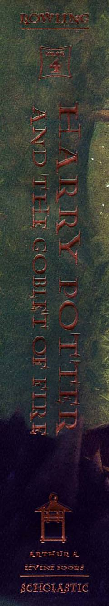

HPHarry Potter Xogvartsda xavfli Uch afsungar turnirida ishtirok etadi.
Harry Potter seriyasining to'rtinchi qismida bosh qahramon Xogvartsda o'tkaziladigan xavfli Uch afsungar turnirida kutilmaganda ishtirok etishga majbur bo'ladi. U bu sinovlardan o'tish jarayonida qorong'u kuchlarning qayta tiklanayotganidan darak beruvchi qo'rqinchli voqealarga duch keladi. Ushbu roman sehrgarlar olamidagi sirlar, do'stlik sinovlari va shiddatli to'qnashuvlarga boy.